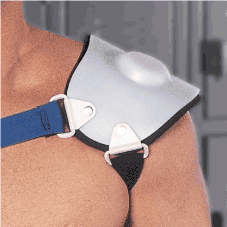

<table width="600" border="5" align="center" cellpadding="0" cellspacing="0" bordercolor="#333399">
  <tr> 
    <td><table width="100%" border="0" cellspacing="0" cellpadding="10">
        <tr> 
          <td valign="top"></td>
          <td valign="top"><p><font color="#333399" size="3" face="Arial, Helvetica, sans-serif"><strong>IMPACT™ 
              AC PADS<br>
              </strong></font><font size="2" face="Arial, Helvetica, sans-serif">The 
              IMPACT™ AC Pad provides state-of-the-art protection for athletes 
              with shoulder separations. The pad's patented technology deflects 
              blows from injured areas, allowing athletes to return to the field 
              without fear of reinjury. The AC Pad's straps anchor it to the shoulder 
              to prevent migration, and the pad is easily customized by immersion 
              in hot water.</font></p>
            <p><font size="2" face="Arial, Helvetica, sans-serif">Left and Right 
              models<br>
              Standard, under 250 lbs., 110.95 each<br>
              Pro, over 250 lbs., 112.95 each</font></p>
            <p><font color="#333399" size="3" face="Arial, Helvetica, sans-serif"><strong>To 
              order: 1 800 758-5633</strong></font></p></td>
        </tr>
        <tr>
          <td valign="top">&nbsp;</td>
          <td align="right" valign="top"><a href="#" onClick="javascript: window.close()"></a>&nbsp;</td>
        </tr>
      </table></td>
  </tr>
</table>
